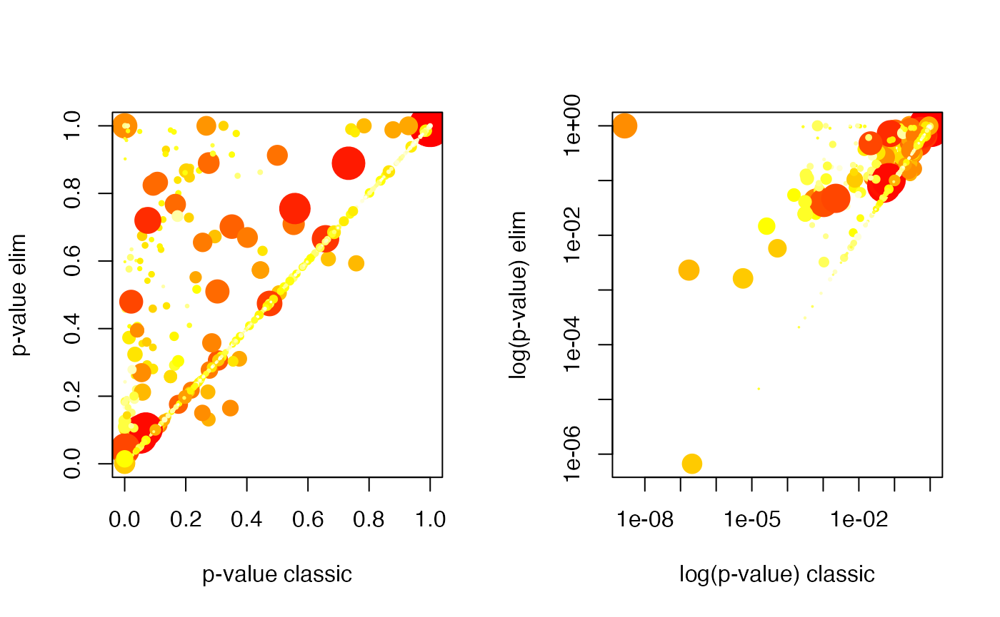
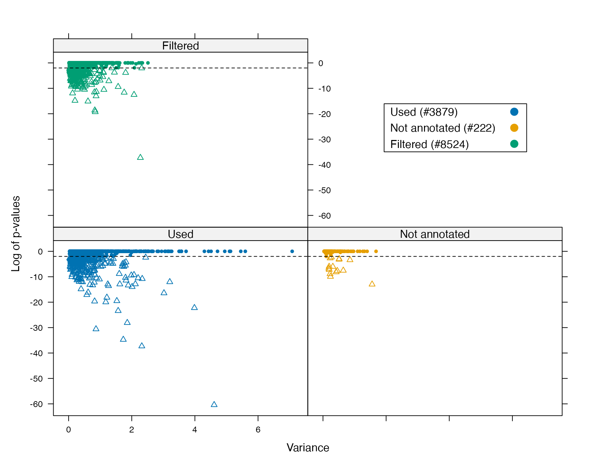
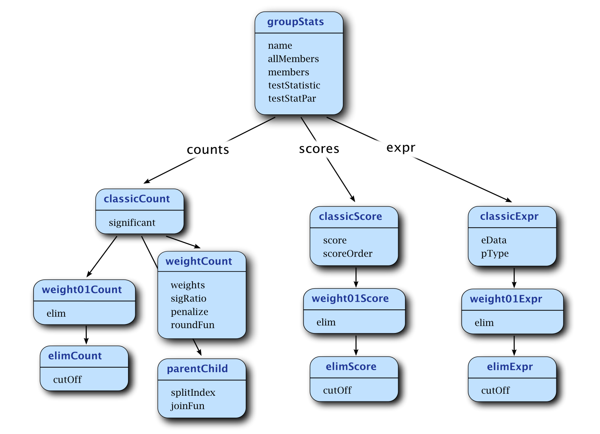
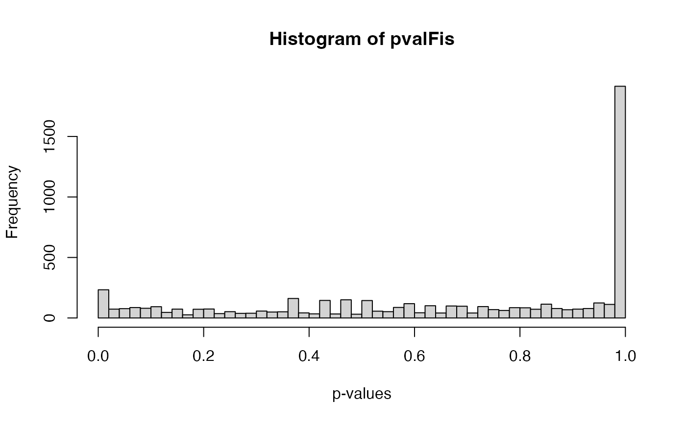
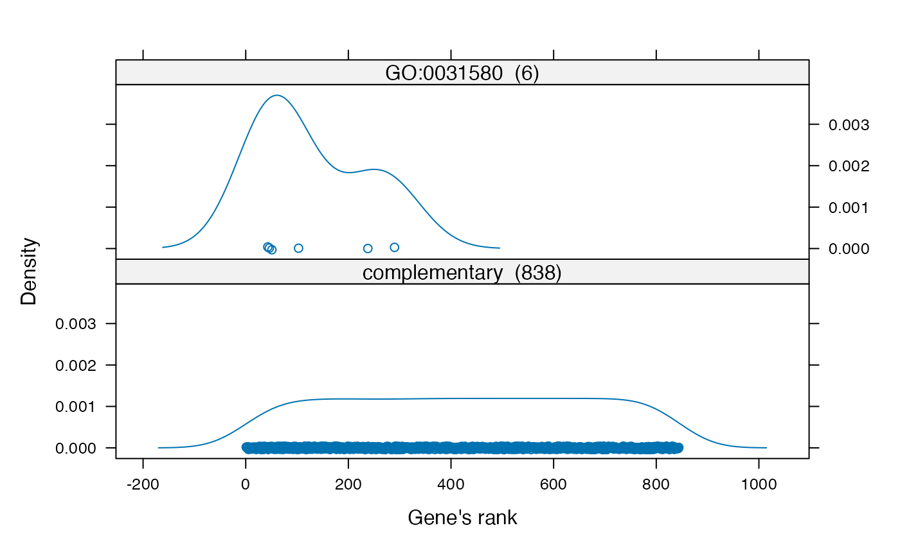
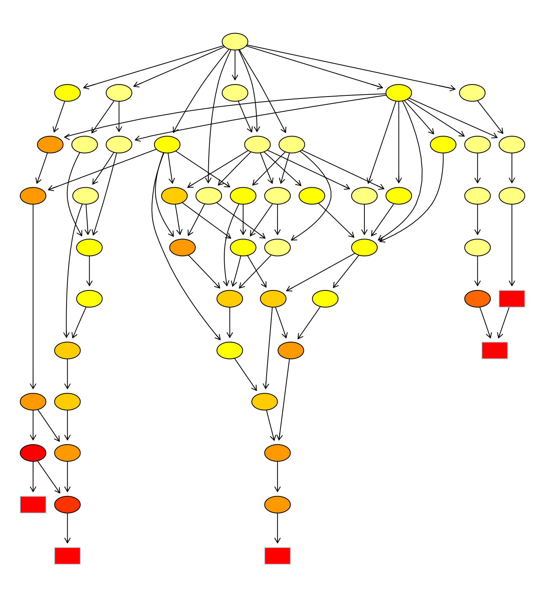
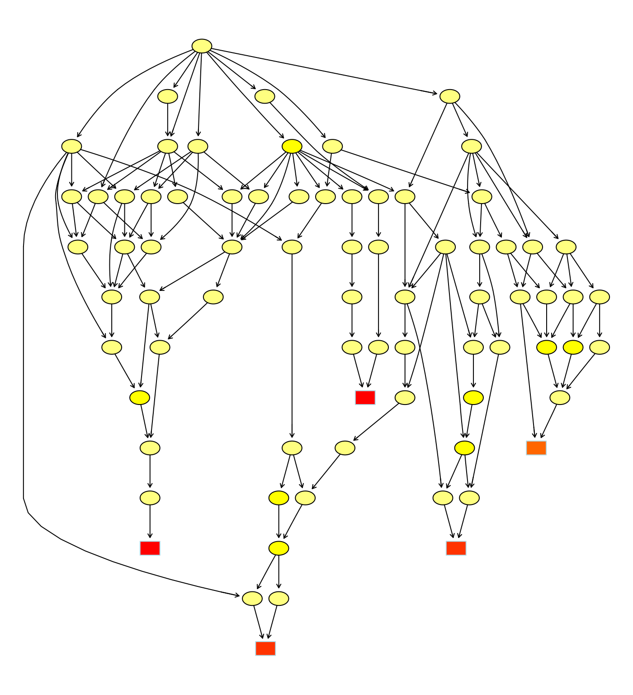

Gene set enrichment analysis with topGO
Adrian Alexa
Max Planck Institute for Informatics, Saarbrücken, Germanyadrian.alexa@gmail.com
Jörg Rahnenführer
Max Planck Institute for Informatics, Saarbrücken, GermanyFederico Marini
Institute of Medical Biostatistics, Epidemiology and Informatics (IMBEI), Mainz, Germanymarinif@uni-mainz.de
18 July 2025
Source:vignettes/topGO_manual.Rmd
topGO_manual.RmdIntroduction
The topGO package is designed to facilitate
semi-automated enrichment analysis for Gene Ontology (GO) terms. The
process consists of input of normalised gene expression measurements,
gene-wise correlation or differential expression analysis, enrichment
analysis of GO terms, interpretation and visualisation of the
results.
One of the main advantages of topGO is the unified gene
set testing framework it offers. Besides providing an easy to use set of
functions for performing GO enrichment analysis, it also enables the
user to easily implement new statistical tests or new algorithms that
deal with the GO graph structure. This unified framework also
facilitates the comparison between different GO enrichment
methodologies.
There are a number of test statistics and algorithms dealing with the
GO graph structured ready to use in topGO. Table
@ref(tab:algos) presents the compatibility table between the test
statistics and GO graph methods.
| fisher | ks | t | globaltest | sum | |
|---|---|---|---|---|---|
| classic | ✅ | ✅ | ✅ | ✅ | ✅ |
| elim | ✅ | ✅ | ✅ | ✅ | ✅ |
| weight | ✅ | 🔴 | 🔴 | 🔴 | 🔴 |
| weight01 | ✅ | ✅ | ✅ | ✅ | ✅ |
| lea | ✅ | ✅ | ✅ | ✅ | ✅ |
| parentchild | ✅ | 🔴 | 🔴 | 🔴 | 🔴 |
The elim and weight algorithms were
introduced in (Alexa, Rahnenführer, and Lengauer
2006). The default algorithm used by the topGO
package is a mixture between the elim and the
weight algorithms and it will be referred as
weight01. The parentChild algorithm was
introduced by (Grossmann et al. 2007).
We assume the user has a good understanding of GO, see (Consortium 2001; Yon Rhee et al. 2008), and is familiar with gene set enrichment tests. Also this document requires basic knowledge of R language.
The next section presents a quick tour into topGO and is
thought to be independent of the rest of this manuscript. The remaining
sections provide details on the functions used in the sample section as
well as showing more advance functionality implemented in the
topGO package.
Installation
This section briefly describe the necessary to get topGO
running on your system. We assume that the user have the R program (see
the R project at https://www.r-project.org) already
installed and its familiar with it. You will need to have R 2.10.0 or
later to be able to install and run topGO.
The topGO package is available from the Bioconductor
repository at https://www.bioconductor.org. To
be able to install the package one needs first to install the core
Bioconductor packages. If you have already installed Bioconductor
packages on your system then you can skip the two lines below.
if (!requireNamespace("BiocManager", quietly=TRUE))
install.packages("BiocManager")
BiocManager::install()Once the core Bioconductor packages are installed, we can install the
topGO package by
BiocManager::install("topGO")Quick start guide
This section describes a simple working session using
topGO. There are only a handful of commands necessary to
perform a gene set enrichment analysis which will be briefly presented
below.
A typical session can be divided into three steps:
Data preparation: List of genes identifiers, gene scores, list of differentially expressed genes or a criteria for selecting genes based on their scores, as well as gene-to-GO annotations are all collected and stored in a single
Robject.Running the enrichment tests: Using the object created in the first step the user can perform enrichment analysis using any feasible mixture of statistical tests and methods that deal with the GO topology.
Analysis of the results: The results obtained in the second step are analysed using summary functions and visualisation tools.
Before going through each of those steps the user needs to decide which biological question he would like to investigate. The aim of the study, as well as the nature of the available data, will dictate which test statistic/methods need to used.
In this section we will test the enrichment of GO terms with differentially expressed genes using two statistical tests, namely Kolmogorov-Smirnov test and Fisher’s exact test.
Data preparation
In the first step a convenient R object of class
topGOdata is created containing all the information
required for the remaining two steps. The user needs to provide the gene
universe, GO annotations and either a criteria for selecting interesting
genes (e.g. differentially expressed genes) from the gene universe or a
score associated with each gene.
In this session we will test the enrichment of GO terms with
differentially expressed genes. Thus, the starting point is a list of
genes and the respective
-values
for differential expression. A toy example of a list of gene
-values
is provided by the geneList object.
The geneList data is based on a differential expression
analysis of the ALL (Acute Lymphoblastic Leukemia) dataset that was
extensively studied in the literature on microarray analysis (Chiaretti, S., et al. 2004). Our toy example
contains just a small amount, 323, of genes and their corresponding
-values.
The next data one needs are the gene groups itself, the GO terms in our
case, and the mapping that associate each gene with one or more GO
term(s). The information on where to find the GO annotations is stored
in the ALL object and it is easily accessible.
affyLib <- paste(annotation(ALL), "db", sep = ".")
library(package = affyLib, character.only = TRUE)The microarray used in the experiment is the hgu95av2 from
Affymetrix, as we can see from the affyLib object. When we
loaded the geneList object a selection function used for
defining the list of differentially expressed genes is also loaded under
the name of topDiffGenes. The function assumes that the
provided argument is a named vector of
-values.
With the help of this function we can see that there are 50 genes with a
raw
-value
less than
out of a total of 323 genes.
sum(topDiffGenes(geneList))
#> [1] 50We now have all data necessary to build an object of type
topGOdata. This object will contain all gene identifiers
and their scores, the GO annotations, the GO hierarchical structure and
all other information needed to perform the desired enrichment
analysis.
sampleGOdata <- new("topGOdata",
description = "Simple session", ontology = "BP",
allGenes = geneList, geneSel = topDiffGenes,
nodeSize = 10,
annot = annFUN.db, affyLib = affyLib)The names of the arguments used for building the
topGOdata object should be self-explanatory. We quickly
mention that nodeSize = 10 is used to prune the GO
hierarchy from the terms which have less than
annotated genes and that annFUN.db function is used to
extract the gene-to-GO mappings from the affyLib object.
Section @ref(sec:topGOdata) describes the parameters used to build the
topGOdata in details.
A summary of the sampleGOdata object can be seen by
typing the object name at the R prompt. Having all the data stored into
this object facilitates the access to identifiers, annotations and to
basic data statistics.
sampleGOdata
#>
#> ------------------------- topGOdata object -------------------------
#>
#> Description:
#> - Simple session
#>
#> Ontology:
#> - BP
#>
#> 323 available genes (all genes from the array):
#> - symbol: 1095_s_at 1130_at 1196_at 1329_s_at 1340_s_at ...
#> - score : 1 1 0.62238 0.541224 1 ...
#> - 50 significant genes.
#>
#> 316 feasible genes (genes that can be used in the analysis):
#> - symbol: 1095_s_at 1130_at 1196_at 1329_s_at 1340_s_at ...
#> - score : 1 1 0.62238 0.541224 1 ...
#> - 50 significant genes.
#>
#> GO graph (nodes with at least 10 genes):
#> - a graph with directed edges
#> - number of nodes = 943
#> - number of edges = 1948
#>
#> ------------------------- topGOdata object -------------------------Performing the enrichment tests
Once we have an object of class topGOdata we can start
with the enrichment analysis. We will use two types of test statistics:
Fisher’s exact test which is based on gene counts, and a
Kolmogorov-Smirnov like test which computes enrichment based on gene
scores. We can use both these tests since each gene has a score
(representing how differentially expressed a gene is) and by the means
of topDiffGenes functions the genes are categorized into
differentially expressed or not differentially expressed genes. All
these are stored into sampleGOdata object.
The function runTest is used to apply the specified test
statistic and method to the data. It has three main arguments. The first
argument needs to be an object of class topGOdata. The
second and third argument are of type character; they specify the method
for dealing with the GO graph structure and the test statistic,
respectively.
First, we perform a classical enrichment analysis by testing the
over-representation of GO terms within the group of differentially
expressed genes. For the method classic each GO category is
tested independently.
resultFisher <- runTest(sampleGOdata,
algorithm = "classic", statistic = "fisher")runTest returns an object of class
topGOresult. A short summary of this object is shown
below.
resultFisher
#>
#> Description: Simple session
#> Ontology: BP
#> 'classic' algorithm with the 'fisher' test
#> 943 GO terms scored: 45 terms with p < 0.01
#> Annotation data:
#> Annotated genes: 316
#> Significant genes: 50
#> Min. no. of genes annotated to a GO: 10
#> Nontrivial nodes: 857Next we will test the enrichment using the Kolmogorov-Smirnov test.
We will use the both the classic and the elim
method.
resultKS <- runTest(sampleGOdata, algorithm = "classic", statistic = "ks")
resultKS.elim <- runTest(sampleGOdata, algorithm = "elim", statistic = "ks")Please note that not all statistical tests work with every method. The compatibility matrix between the methods and statistical tests is shown in Table @ref(tab:algos)).
The
-values
computed by the runTest function are unadjusted for
multiple testing. We do not advocate against adjusting the
-values
of the tested groups, however in many cases adjusted
-values
might be misleading.
Analysis of results
After the enrichment tests are performed the researcher needs tools
for analysing and interpreting the results. GenTable is an
easy to use function for analysing the most significant GO terms and the
corresponding
-values.
In the following example, we list the top
significant GO terms identified by the elim method. At the
same time we also compare the ranks and the
-values
of these GO terms with the ones obtained by the classic
method.
allRes <- GenTable(sampleGOdata, classicFisher = resultFisher,
classicKS = resultKS, elimKS = resultKS.elim,
orderBy = "elimKS", ranksOf = "classicFisher", topNodes = 10)The GenTable function returns a data frame containing
the top topNodes GO terms identified by the
elim algorithm, see orderBy argument. The data
frame includes some statistics on the GO terms and the
-values
corresponding to each of the topGOresult object specified
as arguments. Table @ref(tab:sampleGOresults) shows the results.
| GO.ID | Term | Annotated | Significant | Expected | Rank in classicFisher | classicFisher | classicKS | elimKS |
|---|---|---|---|---|---|---|---|---|
| GO:0051301 | cell division | 146 | 16 | 23.10 | 832 | 0.99125 | 2.1e-07 | 6.7e-07 |
| GO:0050852 | T cell receptor signaling pathway | 10 | 8 | 1.58 | 1 | 8.3e-06 | 1.6e-05 | 1.6e-05 |
| GO:0043368 | positive T cell selection | 10 | 7 | 1.58 | 4 | 0.00014 | 0.00021 | 0.00021 |
| GO:0033077 | T cell differentiation in thymus | 11 | 7 | 1.74 | 7 | 0.00034 | 0.00031 | 0.00031 |
| GO:0048638 | regulation of developmental growth | 11 | 3 | 1.74 | 331 | 0.24440 | 0.00031 | 0.00031 |
| GO:0070670 | response to interleukin-4 | 11 | 6 | 1.74 | 18 | 0.00291 | 0.00050 | 0.00050 |
| GO:0032465 | regulation of cytokinesis | 15 | 2 | 2.37 | 566 | 0.71860 | 0.00087 | 0.00087 |
| GO:0008608 | attachment of spindle microtubules to ki… | 25 | 1 | 3.96 | 825 | 0.98884 | 0.00156 | 0.00156 |
| GO:0000278 | mitotic cell cycle | 147 | 16 | 23.26 | 833 | 0.99234 | 5.7e-06 | 0.00163 |
| GO:0007186 | G protein-coupled receptor signaling pat… | 10 | 5 | 1.58 | 47 | 0.01106 | 0.00190 | 0.00190 |
For accessing the GO term’s
-values
from a topGOresult object the user should use the
score functions. As a simple example, we look at the
differences between the results of the classic and the
elim methods in the case of the Kolmogorov-Smirnov test.
The elim method was design to be more conservative then the
classic method and therefore one expects the
-values
returned by the former method are lower bounded by the
-values
returned by the later method. The easiest way to visualize this property
is to scatter plot the two sets of
-values
against each other.
pValue.classic <- score(resultKS)
pValue.elim <- score(resultKS.elim)[names(pValue.classic)]
gstat <- termStat(sampleGOdata, names(pValue.classic))
gSize <- gstat$Annotated / max(gstat$Annotated) * 4
gCol <- colMap(gstat$Significant)
plot(pValue.classic, pValue.elim,
xlab = "p-value classic", ylab = "p-value elim",
pch = 19, cex = gSize, col = gCol)
-values
scatter plot for the classic
(
axis) and elim
(
axis) methods. On the right panel the
-values
are plotted on a linear scale. The left panned plots the same
-values
on a logarithmic scale. The size of the dot is proportional with the
number of annotated genes for the respective GO term and its coloring
represents the number of significantly differentially expressed genes,
with the dark red points having more genes then the yellow ones.
We can see in Figure @ref(fig:scatterClassicElim) that there are
indeed differences between the two methods. Some GO terms found
significant by the classic method are less significant in
the elim, as expected. However, in some cases, we can
visible identify a few GO terms for which the elim
-value
is less conservative then the classic
-value.
If such GO terms exist, we can identify them and find the number of
annotated genes:
sel.go <- names(pValue.classic)[pValue.elim < pValue.classic]
cbind(termStat(sampleGOdata, sel.go),
elim = pValue.elim[sel.go],
classic = pValue.classic[sel.go])
#> Annotated Significant Expected elim classic
#> GO:0006139 117 23 18.51 0.1647853 0.3459721
#> GO:0009893 114 18 18.04 0.5931458 0.7580185
#> GO:0010604 106 17 16.77 0.6064850 0.6667458
#> GO:0019219 99 19 15.66 0.1314337 0.2744319
#> GO:0022607 104 18 16.46 0.2126925 0.2725533
#> GO:0044085 110 20 17.41 0.3107515 0.3749756
#> GO:0045935 72 13 11.39 0.3031730 0.3547761
#> GO:0090304 116 23 18.35 0.1504659 0.2544033It is quite interesting that such cases appear - the above table will not be empty. These GO terms are rather general (having many annotated genes) and their -values are not significant at the level. Therefore these GO terms would not appear in the list of top significant terms. More significant GO terms are less likely to be influenced by this non monotonic behavior.
Another insightful way of looking at the results of the analysis is
to investigate how the significant GO terms are distributed over the GO
graph. Figure @ref(fig:sampleGOelim) shows the the subgraph induced by
the
most significant GO terms as identified by the elim
algorithm. Significant nodes are represented as rectangles. The plotted
graph is the upper induced graph generated by these significant
nodes.
showSigOfNodes(sampleGOdata, score(resultKS.elim),
firstSigNodes = 5, useInfo = 'all')![The subgraph induced by the top $5$ GO terms identified by the `elim` algorithm for scoring GO terms for enrichment. Rectangles indicate the $5$ most significant terms. Rectangle color represents the relative significance, ranging from dark red (most significant) to bright yellow (least significant). For each node, some basic information is displayed. The first two lines show the GO identifier and a trimmed GO name. In the third line the raw p-value is shown. The forth line is showing the number of significant genes and the total number of genes annotated to the respective GO term.](topGO_manual_files/figure-html/sampleGOelim-1.png)
The subgraph induced by the top
GO terms identified by the elim algorithm for scoring GO
terms for enrichment. Rectangles indicate the
most significant terms. Rectangle color represents the relative
significance, ranging from dark red (most significant) to bright yellow
(least significant). For each node, some basic information is displayed.
The first two lines show the GO identifier and a trimmed GO name. In the
third line the raw p-value is shown. The forth line is showing the
number of significant genes and the total number of genes annotated to
the respective GO term.
Loading genes and annotations data
Getting started
To demonstrate the package functionality we will use the ALL (Acute Lymphoblastic Leukemia) gene expression data from (Chiaretti, S., et al. 2004). The dataset consists of microarrays from different patients with ALL measured using the HGU95aV2 Affymetrix chip. Additionally, custom annotations and artificial datasets will be used to demonstrate specific features.
We first load the required libraries and data:
When the topGO package is loaded, three environments
GOBPTerm, GOMFTerm and GOCCTerm
are created and bound to the package environment. These environments are
build based on the GOTERM environment from package
GO.db. They are used for fast recovering of the information
specific to each of the three ontologies: BP, MF and CC. In order to
access all GO groups that belong to a specific ontology, e.g. Biological
Process (BP), one can type:
BPterms <- ls(GOBPTerm)
head(BPterms)
#> [1] "GO:0000001" "GO:0000002" "GO:0000011" "GO:0000012" "GO:0000017" "GO:0000018"Usually one needs to remove probes/genes with low expression value as
well as probes with very small variability across samples. The package
genefilter provides tools for filtering genes. In this
analysis we choose to filter as many genes as possible for computational
reasons; working with a smaller gene universe allows us to exemplify
more of the functionalities implemented in the topGO
package and at the same time allows this document to be compiled in a
relatively short time. The effect of gene filtering is discussed in more
details in Section @ref(subsec:GOannotations).
library(genefilter)
selProbes <- genefilter(ALL, filterfun(pOverA(0.20, log2(100)),
function(x) (IQR(x) > 0.25)))
eset <- ALL[selProbes, ]
eset
#> ExpressionSet (storageMode: lockedEnvironment)
#> assayData: 4101 features, 128 samples
#> element names: exprs
#> protocolData: none
#> phenoData
#> sampleNames: 01005 01010 ... LAL4 (128 total)
#> varLabels: cod diagnosis ... date last seen (21 total)
#> varMetadata: labelDescription
#> featureData: none
#> experimentData: use 'experimentData(object)'
#> pubMedIds: 14684422 16243790
#> Annotation: hgu95av2The filter selects only 4101 probesets out of 12625 probesets available on the hgu95av2 array.
The gene universe and the set of interesting genes
The set of all genes from the array/study will be referred from now
on as the gene universe. Having the gene universe, the user can define a
list of interesting genes or to compute gene-wise scores that quantify
the significance of each gene. When gene-wise scores are available the
list of interesting genes is defined to be the set of gene with a
significant score. The topGO package deals with
these two cases in a unified way once the main data container, the
topGOdata object, is constructed. The only time the user
needs to distinguish between these two cases is during the construction
of the data container.
Usually, the gene universe is defined as all feasible genes measured by the microarray. In the case of the ALL dataset we have 4101 feasible genes, the ones that were not removed by the filtering procedure.
The topGOdata object
The central step in using the topGO package is to create
a topGOdata object. This object will contain all
information necessary for the GO analysis, namely the list of genes, the
list of interesting genes, the gene scores (if available) and the part
of the GO ontology (the GO graph) which needs to be used in the
analysis. The topGOdata object will be the input of the
testing procedures, the evaluation and visualisation functions.
To build such an object the user needs the following:
A list of gene identifiers and optionally the gene-wise scores. The score can be the -test statistic (or the -value) for differential expression, correlation with a phenotype, or any other relevant score.
-
A mapping between gene identifiers and GO terms. In most cases this mapping is directly available in Bioconductor as a microarray specific annotation package. In this case the user just needs to specify the name of the annotation to be used. For example, the annotation package needed for the ALL dataset is hgu95av2.db.
Of course, Bioconductor does not include up-to-date annotation packages for all platforms. Users who work with custom arrays or wish to use a specific mapping between genes and GO terms, have the possibility to load custom annotations. This is described in Section @ref(subsec:annotations).
The GO hierarchical structure. This structure is obtained from the
GO.dbpackage. At the momenttopGOsupports only the ontology definition provided byGO.db.
We further describe the arguments of the initialize
function (new()) used to construct an instance of this
data container object.
ontology: character string specifying the ontology of interest (BP, MF or CC)description: character string containing a short description of the study [optional].allGenes: named vector of type numeric or factor. The names attribute contains the genes identifiers. The genes listed in this object define the gene universe.geneSelectionFun: function to specify which genes are interesting based on the gene scores. It should be present iff theallGenesobject is of type numeric.nodeSize: an integer larger or equal to . This parameter is used to prune the GO hierarchy from the terms which have less thannodeSizeannotated genes (after the true path rule is applied).-
annotationFun: function which maps genes identifiers to GO terms. There are a couple of annotation function included in the package trying to address the user’s needs. The annotation functions take three arguments. One of those arguments is specifying where the mappings can be found, and needs to be provided by the user. Here we give a short description of each:annFUN.db: this function is intended to be used as long as the chip used by the user has an annotation package available in Bioconductor.annFUN.org: this function is using the mappings from the “org.XX.XX” annotation packages. Currently, the function supports the following gene identifiers: Entrez, GenBank, Alias, Ensembl, Gene Symbol, GeneName and UniGene.annFUN.gene2GO: this function is used when the annotations are provided as a gene-to-GOs mapping.annFUN.GO2gene: this function is used when the annotations are provided as a GO-to-genes mapping.annFUN.file: this function will read the annotationsof the type gene2GO or GO2genes from a text file.
...: list of arguments to be passed to theannotationFun
Custom annotations
This section describes how custom GO annotations can be used for
building a topGOdata object.
Annotations need to be provided either as gene-to-GOs or as
GO-to-genes mappings. An example of such mapping can be found
in the “topGO/examples” directory. The file “geneid2go.map” contains
gene-to-GOs mappings. For each gene identifier are listed the GO terms
to which this gene is specifically annotated. We use the
readMappings() function to parse this file.
geneID2GO <- readMappings(file = system.file("examples/geneid2go.map", package = "topGO"))
str(head(geneID2GO))
#> List of 6
#> $ 068724: chr [1:5] "GO:0005488" "GO:0003774" "GO:0001539" "GO:0006935" ...
#> $ 119608: chr [1:6] "GO:0005634" "GO:0030528" "GO:0006355" "GO:0045449" ...
#> $ 049239: chr [1:13] "GO:0016787" "GO:0017057" "GO:0005975" "GO:0005783" ...
#> $ 067829: chr [1:16] "GO:0045926" "GO:0016616" "GO:0000287" "GO:0030145" ...
#> $ 106331: chr [1:10] "GO:0043565" "GO:0000122" "GO:0003700" "GO:0005634" ...
#> $ 214717: chr [1:7] "GO:0004803" "GO:0005634" "GO:0008270" "GO:0003677" ...The object returned by readMappings is a named list of
character vectors. The list names give the genes identifiers. Each
element of the list is a character vector and contains the GO
identifiers annotated to the specific gene. It is sufficient for the
mapping to contain only the most specific GO annotations. However,
topGO can also take as an input files in which all or some
ancestors of the most specific GO annotations are included. This
redundancy is not making for a faster running time and if possible it
should be avoided.
The user can read the annotations from text files or they can build
an object such as geneID2GO directly into R. The text file
format required by the readMappings function is very
simple. It consists of one line for each gene with the following
syntax:
gene_ID<TAB>GO_ID1, GO_ID2, GO_ID3, ....Reading GO-to-genes mappings from a file is also possible using the
readMappings function. However, it is the user
responsibility to know the direction of the mappings. The user can
easily transform a mapping from gene-to-GOs to GO-to-genes (or
vice-versa) using the function inverseList():
GO2geneID <- inverseList(geneID2GO)
str(head(GO2geneID))
#> List of 6
#> $ GO:0000122: chr "106331"
#> $ GO:0000139: chr [1:6] "133103" "111846" "109956" "161395" ...
#> $ GO:0000166: chr [1:10] "067829" "157764" "100302" "074582" ...
#> $ GO:0000186: chr "181104"
#> $ GO:0000209: chr "159461"
#> $ GO:0000228: chr "214717"Predefined list of interesting genes
If the user has some a priori knowledge about a set of interesting genes, he can test the enrichment of GO terms with regard to this list of interesting genes. In this scenario, when only a list of interesting genes is provided, the user can use only tests statistics that are based on gene counts, like Fisher’s exact test, Z score and alike.
To demonstrate how custom annotation can be used this section is
based on the toy dataset, the geneID2GO data, from Section
@ref(subsec:annotations). The gene universe in this case is given by the
list names:
geneNames <- names(geneID2GO)
head(geneNames)
#> [1] "068724" "119608" "049239" "067829" "106331" "214717"Since for the available genes we do not have any measurement and thus no criteria to select interesting genes, we randomly select genes from the gene universe and consider them as interesting genes.
myInterestingGenes <- sample(geneNames, length(geneNames) / 10)
geneList <- factor(as.integer(geneNames %in% myInterestingGenes))
names(geneList) <- geneNames
str(geneList)
#> Factor w/ 2 levels "0","1": 1 1 1 1 2 1 1 1 1 1 ...
#> - attr(*, "names")= chr [1:100] "068724" "119608" "049239" "067829" ...The geneList object is a named factor that indicates
which genes are interesting and which not. It should be straightforward
to compute such a named vector in a real case situation, where the user
has his own predefined list of interesting genes.
We now have all the elements to construct a topGOdata
object.
To build the topGOdata object, we will use the MF
ontology. The mapping is given by the geneID2GO list which
will be used with the annFUN.gene2GO function.
GOdata <- new("topGOdata", ontology = "MF", allGenes = geneList,
annot = annFUN.gene2GO, gene2GO = geneID2GO)The building of the GOdata object can take some time,
depending on the number of annotated genes and on the chosen ontology.
In our example the running time is quite fast given that we have a
rather small size gene universe which also imply a moderate size GO
ontology, especially since we are using the MF ontology.
The advantage of having (information on) the gene scores (or better
genes measurements) as well as a way to define which are the interesting
genes, in the topGOdata object is that one can apply
various group testing procedure, which let us test multiple hypothesis
or tune with different parameters.
By typing GOdata at the R prompt, the user can see a
summary of the data.
GOdata
#>
#> ------------------------- topGOdata object -------------------------
#>
#> Description:
#> -
#>
#> Ontology:
#> - MF
#>
#> 100 available genes (all genes from the array):
#> - symbol: 068724 119608 049239 067829 106331 ...
#> - 10 significant genes.
#>
#> 86 feasible genes (genes that can be used in the analysis):
#> - symbol: 068724 119608 049239 067829 106331 ...
#> - 10 significant genes.
#>
#> GO graph (nodes with at least 1 genes):
#> - a graph with directed edges
#> - number of nodes = 223
#> - number of edges = 286
#>
#> ------------------------- topGOdata object -------------------------One important point to notice is that not all the genes that are
provided by geneList, the initial gene universe, can be
annotated to the GO. This can be seen by comparing the number of all
available genes, the genes present in geneList, with the
number of feasible genes. We are therefore forced at this point to
restrict the gene universe to the set of feasible genes for the rest of
the analysis.
The summary on the GO graph shows the number of GO terms and the relations between them of the specified GO ontology. This graph contains only GO terms which have at least one gene annotated to them.
Using the genes score
In many cases the set of interesting genes can be computed based on a
score assigned to all genes, for example based on the
-value
returned by a study of differential expression. In this case, the
topGOdata object can store the genes score and a rule
specifying the list of interesting genes. The advantage of having both
the scores and the procedure to select interesting genes encapsulated in
the topGOdata object is that the user can choose different
types of tests statistics for the GO analysis without modifying the
input data.
A typical example for the ALL dataset is the study where we need to discriminate between ALL cells delivered from either B-cell or T-cell precursors.
y <- as.integer(sapply(eset$BT, function(x) return(substr(x, 1, 1) == 'T')))
table(y)There are 95 B-cell ALL samples and 95 T-cell ALL samples in the
dataset. A two-sided
-test
can by applied using the function getPvalues (a wrapping
function for the mt.teststat from the multtest
package). By default the function computes FDR (false discovery rate)
adjusted
-value
in order to account for multiple testing. A different type of correction
can be specified using the correction argument.
geneList <- getPvalues(exprs(eset), classlabel = y, alternative = "greater")geneList is a named numeric vector. The gene identifiers
are stored in the names attribute of the vector. This set of genes
defines the gene universe.
Next, a function for specifying the list of interesting genes must be
defined. This function needs to select genes based on their scores (in
our case the adjusted
-values)
and must return a logical vector specifying which gene is selected and
which not. The function must have one argument, named
allScore and must not depend on any attributes of this
object. In this example we will consider as interesting genes all genes
with an adjusted
-value
lower than
.
This criteria is implemented in the following function:
topDiffGenes <- function(allScore) {
return(allScore < 0.01)
}
x <- topDiffGenes(geneList)
sum(x) ## the number of selected genesWith all these steps done, the user can now build the
topGOdata object. For a short description of the arguments
used by the initialize function see Section
@ref(subsec:sigGenes)
GOdata <- new("topGOdata",
description = "GO analysis of ALL data; B-cell vs T-cell",
ontology = "BP",
allGenes = geneList,
geneSel = topDiffGenes,
annot = annFUN.db,
nodeSize = 5,
affyLib = affyLib)It is often the case that many GO terms which have few annotated
genes are detected to be significantly enriched due to artifacts in the
statistical test. These small sized GO terms are of less importance for
the analysis and in many cases they can be omitted. By using the
nodeSize argument the user can control the size of the GO
terms used in the analysis. Once the genes are annotated to the each GO
term and the true path rule is applied the nodes with less than
nodeSize annotated genes are removed from the GO hierarchy.
We found that values between
and
for the nodeSize parameter yield more stable results. The
default value for the nodeSize parameter is
,
meaning that no pruning is performed.
Note that the only difference in the initialisation of an object of
class topGOdata to the case in which we start with a
predefined list of interesting genes is the use of the
geneSel argument. All further analysis depends only on the
GOdata object.
Filtering and missing GO annotations
Before going further with the enrichment analysis we analyse which of the probes available on the array can be used in the analysis.
We want to see if the filtering performed in Section @ref(subsec:preprocessing) removes important probes. There are a total of probes on the chip. One assumes that only the noisy probes, probes with low expression values or small variance across samples are filtered out from the analysis.
The number of probes have a direct effect on the multiple testing adjustment of -values. Too many probes will result in too conservative adjusted -values which can bias the result of tests like Fisher’s exact test. Thus, it is important to carefully analyse this step.
allProb <- featureNames(ALL)
groupProb <- integer(length(allProb)) + 1
groupProb[allProb %in% genes(GOdata)] <- 0
groupProb[!selProbes] <- 2
groupProb <- factor(groupProb,
labels = c("Used", "Not annotated", "Filtered"))
tt <- table(groupProb)
tt
#> groupProb
#> Used Not annotated Filtered
#> 3879 222 8524Out of the filtered probes only have annotation to GO terms. The filtering procedure removes probes which is a very large percentage of probes (more than ), but we did this intentionally to reduce the expression set for computational purposes.
We perform a differential expression analysis on all available probes and we check if differentially expressed genes are left out from the enrichment analysis.
library(lattice)
pValue <- getPvalues(exprs(ALL), classlabel = y, alternative = "greater")
geneVar <- apply(exprs(ALL), 1, var)
dd <- data.frame(x = geneVar[allProb],
y = log10(pValue[allProb]),
groups = groupProb)
legendLab <- paste(names(table(groupProb)),
" (#", table(groupProb), ")", sep = "")
xyplot(y ~ x | groups, data = dd, groups = groups,
xlab = "Variance", ylab = "Log of p-values",
layout = c(2, 2),
key = list(text = list(lab = legendLab),
points = list(pch = 20, cex = 2,
col = Rows(trellis.par.get("superpose.symbol"), 1:3)$col),
size = 7, padding.text = 3,
x = .65, y = .7, corner = c(0, 0), border = TRUE, cex = 1),
panel = function(x, y, ...) {
selY <- y <= -2
panel.xyplot(x[selY], y[selY], pch = 2, ...)
panel.xyplot(x[!selY], y[!selY], pch = 20, ...)
panel.abline(h = -2, lty = 2, col = "black")
})
Scatter plot of FDR adjusted -values against variance of probes. Points below the horizontal line are significant probes.
Figure @ref(fig:whichProbes) shows for the three groups of probes the adjusted -values and the gene-wise variance. Probes with large changes between conditions have large variance and low -value. In an ideal case, one would expect to have a large density of probes in the lower right corner of Used panel and few probes in this region in the other two panels. We can see that the filtering process throws out some significant probes and in a real analysis a more conservative filtering needs to be applied. However, there are also many differentially expressed probes without GO annotation which cannot be used in the analysis.
Working with the topGOdata object
Once the topGOdata object is created the user can use
various methods defined for this class to access the information
encapsulated in the object.
The description slot contains information about the
experiment. This information can be accessed or replaced using the
method with the same name.
description(GOdata)
description(GOdata) <- paste(description(GOdata),
"Object modified on:",
format(Sys.time(), "%d %b %Y"), sep = " ")
description(GOdata)Methods to obtain the list of genes that will be used in the further analysis or methods for obtaining all gene scores are exemplified below.
a <- genes(GOdata) ## obtain the list of genes
head(a)
#> [1] "1000_at" "1005_at" "1007_s_at" "1008_f_at" "1009_at" "100_g_at"
numGenes(GOdata)
#> [1] 3879Next we describe how to retrieve the score of a specified set of genes, e.g. a set of randomly selected genes. If the object was constructed using a list of interesting genes, then the factor vector that was provided at the building of the object will be returned.
selGenes <- sample(a, 10)
gs <- geneScore(GOdata, whichGenes = selGenes)
print(gs)
#> 36285_at 31957_r_at 36603_at 1243_at 33277_at 38400_at 38707_r_at
#> 1.000000e+00 1.000000e+00 6.819312e-01 1.000000e+00 4.378891e-03 1.000000e+00 1.000000e+00
#> 41262_at 40147_at 32052_at
#> 1.000000e+00 1.084672e-09 1.000000e+00If the user wants an unnamed vector or the score of all genes:
gs <- geneScore(GOdata, whichGenes = selGenes, use.names = FALSE)
print(gs)
#> [1] 1.000000e+00 1.000000e+00 6.819312e-01 1.000000e+00 4.378891e-03 1.000000e+00 1.000000e+00
#> [8] 1.000000e+00 1.084672e-09 1.000000e+00
gs <- geneScore(GOdata, use.names = FALSE)
str(gs)
#> num [1:3879] 0.007953 1 1 1 0.000285 ...The list of significant genes can be accessed using the method
sigGenes.
sg <- sigGenes(GOdata)
str(sg)
#> chr [1:339] "1000_at" "1009_at" "106_at" "1091_at" "1105_s_at" "1110_at" "1140_at" ...
numSigGenes(GOdata)
#> [1] 339Another useful method is updateGenes which allows the
user to update/change the list of genes (and their scores) from a
topGOdata object. If one wants to update the list of genes
by including only the feasible ones, one can type:
.geneList <- geneScore(GOdata, use.names = TRUE)
GOdata ## more available genes
GOdata <- updateGenes(GOdata, geneList = .geneList, geneSelFun = topDiffGenes)
GOdata ## the available genes are now the feasible genesThere are also methods available for accessing information related to GO and its structure. First, we want to know which GO terms are available for analysis and to obtain all the genes annotated to a subset of these GO terms.
graph(GOdata) ## returns the GO graph
#> A graphNEL graph with directed edges
#> Number of Nodes = 5758
#> Number of Edges = 12299
ug <- usedGO(GOdata)
head(ug)
#> [1] "GO:0000002" "GO:0000018" "GO:0000027" "GO:0000028" "GO:0000038" "GO:0000041"We further select random GO terms, count the number of annotated genes and obtain their annotation.
sel.terms <- sample(usedGO(GOdata), 10)
num.ann.genes <- countGenesInTerm(GOdata, sel.terms) ## the number of annotated genes
num.ann.genes
ann.genes <- genesInTerm(GOdata, sel.terms) ## get the annotations
head(ann.genes)When the sel.terms argument is missing all GO terms are
used. The scores for all genes, possibly annotated with names of the
genes, can be obtained using the method scoresInTerm().
ann.score <- scoresInTerm(GOdata, sel.terms)
head(ann.score)
ann.score <- scoresInTerm(GOdata, sel.terms, use.names = TRUE)
head(ann.score)Finally, some statistics for a set of GO terms are returned by the
method termStat. As mentioned previously, if the
sel.terms argument is missing then the statistics for all
available GO terms are returned.
termStat(GOdata, sel.terms)
#> Annotated Significant Expected
#> GO:0046889 27 6 2.36
#> GO:0031638 21 3 1.84
#> GO:0072749 5 0 0.44
#> GO:0061045 19 1 1.66
#> GO:0032272 32 2 2.80
#> GO:0046645 8 4 0.70
#> GO:0006796 711 74 62.14
#> GO:0051145 19 2 1.66
#> GO:1903319 13 1 1.14
#> GO:0097581 42 2 3.67Running the enrichment tests
In this section we explain how we can run the desired enrichment
method once the topGOdata object is available.
topGO package was designed to work with various test
statistics and various algorithms which take the GO dependencies into
account. At the base of this design stands a S4 class mechanism which
facilitates defining and executing a (new) group test. Three types of
enrichment tests can be distinguish if we look at the data used by the
each test.
- Tests based on gene counts. This is the most popular family of tests, given that it only requires the presence of a list of interesting genes and nothing more. Tests like Fisher’s exact test, Hypergeometric test and binomial test belong to this family (Draghici, Sellamuthu, and Khatri 2006).
- Tests based on gene scores or gene ranks. It includes Kolmogorov-Smirnov like tests (also known as GSEA), Gentleman’s Category, -test, etc. (Ackermann and Strimmer 2009).
- Tests based on gene expression. Tests like Goeman’s globaltest or GlobalAncova separate from the others since they work directly on the expression matrix (Goeman and Bühlmann 2007).
There are also a number of strategies/algorithms to account for the GO topology, see Table @ref(tab:algos), each of them having specific requirements.
For each test type described above and for each algorithm there is S4
class defined in the package. The main idea is to have a class
(container) which can store, for a specified gene set(GO category), all
data necessary for computing the desired test statistic, and a
method
that will iterate over all GO categories. In such a design the user
needs to instantiate an object from the class corresponding to the
chosen method(test statistic and algorithm) and then run the iterator
function on this object.
The defined S4 classes are organised in a hierarchy which is showed in Figure @ref(fig:topGOclasses).

The test statistics class structure.
There are two possibilities(or interfaces) for applying a test
statistic to an object of class topGOdata. The basic
interface, which provides the core of the testing procedure in
topGO, offers more flexibility to the experienced
R user allowing him to implement new test statistics or new
algorithms. The second interface is more user friendly but at the same
time more restrictive in the choice of the tests and algorithms used. We
will further explain how these two interfaces work.
Defining and running the test
The main function for running the GO enrichment is
getSigGroups() and it takes two arguments. The first
argument is an instance of class topGOdata and the second
argument is an instance of class groupStats or any of its
descendents.
To better understand this principle consider the following example.
Assume we decided to apply the classic algorithm. The two
classes defined for this algorithm are classicCount and
classicScore. If an object of this class is given as a
argument to getSigGroups() than the classic algorithm will
be used. The getSigGroups() function can take a while,
depending on the size of the graph (the ontology used), so be
patient.
The groupStats classes
Next we show how an instance of the groupStats class can
represent a gene set and how the test statistic is performed.
We compute the enrichment of lipid metabolic process (GO:0006629) term using Fisher’s exact test. In order to do this we need to define the gene universe, to obtain the genes annotated to GO:0006629, and to define the set of significant genes.
goID <- "GO:0006629"
gene.universe <- genes(GOdata)
go.genes <- genesInTerm(GOdata, goID)[[1]]
sig.genes <- sigGenes(GOdata)Now we can instantiate an object of class classicCount.
Once the object is constructed we can get the
contingency table or apply the test statistic.
my.group <- new("classicCount", testStatistic = GOFisherTest, name = "fisher",
allMembers = gene.universe, groupMembers = go.genes,
sigMembers = sig.genes)
contTable(my.group)
#> sig notSig
#> anno 40 269
#> notAnno 299 3271
runTest(my.group)
#> [1] 0.006105784The slot testStatistic contains the function (or to be
more precise, the method) which computes the test statistic. We used the
GOFisherTest function which is available in the
topGO package and as the name states it implements Fisher’s
exact test. The user can define his own test statistic function and then
apply it using the preferred algorithm. The function, however, should
use the methods defined for the groupStats class to access
the data encapsulated in such an object. (For example a function which
computes the
score can be easily implemented using as an example the
GOFisherTest method.)
The runTest method is defined for the
groupStats class and its used to run/compute the test
statistic, by calling the testStatistic function. The value
returned by the runTest method in this case is the value
returned by GOFisherTest method, which is the Fisher’s
exact test
-value.
The contTable method, showed in the example above, is only
defined for the classes based on gene counts and its used to compile the
two-dimensional contingency table based on the object.
To show how the same interface is used for the classes based on gene
counts we next build an instance for the elimCount class.
We randomly select
of the annotated genes as genes that should be removed.
set.seed(123)
elim.genes <- sample(go.genes, length(go.genes) / 4)
elim.group <- new("elimCount", testStatistic = GOFisherTest, name = "fisher",
allMembers = gene.universe, groupMembers = go.genes,
sigMembers = sig.genes, elim = elim.genes)
contTable(elim.group)
#> sig notSig
#> anno 33 199
#> notAnno 299 3271
runTest(elim.group)
#> [1] 0.002859123We see that the interface accounts for the genes that need to be eliminated, once the object is instantiated. The same mechanism applies for the other hierarchy of classes (the score based and expression based classes), except that each hierarchy has its own specialised methods for computing statistics from the data.
Please note that the groupStats class or any descendent
class does not depend on GO, and an object of such a class can be
instantiated using any gene set.
Performing the test
According to the mechanism described above, one first defines a test statistic for the chosen algorithm, meaning that an instance of object specific for the algorithm is constructed in which only the test statistic must be specified, and then calls a generic function (interface) to run the algorithm.
According to this mechanism, one first defines a test statistic for
the chosen algorithm, in this case classic and then runs
the algorithm (see the second line). The slot testStatistic
contains the test statistic function. In the above example
GOFisherTest function which implements Fisher’s exact test
and is available in the topGO package was used. A user can
define his own test statistic function and then apply it using the
classic algorithm. (For example a function which computes
the
score can be implemented using as an example the
GOFisherTest method.)
test.stat <- new("classicCount",
testStatistic = GOFisherTest,
name = "Fisher test")
resultFisher <- getSigGroups(GOdata, test.stat)A short summary on the used test and the results is printed at the R console.
resultFisher
#>
#> Description: GO analysis of ALL data; B-cell vs T-cell Object modified on: 18 Jul 2025
#> Ontology: BP
#> 'classic' algorithm with the 'Fisher test' test
#> 5758 GO terms scored: 166 terms with p < 0.01
#> Annotation data:
#> Annotated genes: 3879
#> Significant genes: 339
#> Min. no. of genes annotated to a GO: 5
#> Nontrivial nodes: 3976To use the Kolmogorov-Smirnov (KS) test one needs to provide the
gene-wise scores and thus we need to instantiate an object of a class
which is able to deal of the scores. Such a class is the
classicScore class, see Figure @ref(fig:topGOclasses) which
will let us run the classic algorithm.
test.stat <- new("classicScore",
testStatistic = GOKSTest,
name = "KS tests")
resultKS <- getSigGroups(GOdata, test.stat)The mechanism presented above for classic also hold for
elim and weight. The user should pay attention
to the compatibility between the chosen class and the function for
computing the test statistic, since no incompatibility test are made
when the object is instantiated. For example the weight
algorithm will not work with classes based on gene-wise scores. To run
the elim algorithm with KS test one needs to type:
test.stat <- new("elimScore", testStatistic = GOKSTest,
name = "Fisher test", cutOff = 0.01)
resultElim <- getSigGroups(GOdata, test.stat)Similarly, for the weight algorithm with Fisher’s exact
test one types:
test.stat <- new("weightCount", testStatistic = GOFisherTest,
name = "Fisher test", sigRatio = "ratio")
resultWeight <- getSigGroups(GOdata, test.stat)The adjustment of -values
The
-values
return by the getSigGroups function are row
-values.
There is no multiple testing correction applied to them, unless the test
statistic directly incorporate such a correction. Of course, the
researcher can perform an adjustment of the
-values
if he considers it is important for the analysis. The reasons for not
automatically correcting for multiple testing are:
In many cases the row -values return by an enrichment analysis are not that extreme. A FDR/FWER adjustment procedure can in this case produce very conservative -values and declare no, or very few, terms as significant. This is not necessary a bad thing, but it can happen that there are interesting GO terms which didn’t make it over the cutoff but they are omitted and thus valuable information lost. In this case the researcher might be interested in the ranking of the GO terms even though no top term is significant at a specify FDR level.
One should keep in mind that an enrichment analysis consist of many steps and there are many assumptions done before applying, for example, Fisher’s exact test on a set of GO terms. Performing a multiple testing procedure accounting only on the number of GO terms is far from being enough to control the error rate.
For the methods that account for the GO topology like
elimandweight, the problem of multiple testing is even more complicated. Here one computes the -value of a GO term conditioned on the neighbouring terms. The tests are therefore not independent and the multiple testing theory does not directly apply. We like to interpret the -values returned by these methods as corrected or not affected by multiple testing.
runTest: a high-level interface for testing
Over the basic interface we implemented an abstract layer to provide
the users with a higher level interface for running the enrichment
tests. The interface is composed by a function, namely the
runTest function, which can be used only with a predefined
set of test statistics and algorithms. In fact runTest is a
warping function for the set of commands used for defining and running a
test presented in Section @ref(sub:define_test).
There are three main arguments that this function takes. The first
argument is an object of class topGOdata. The second
argument, named algorithm, is of type character and
specifies which method for dealing with the GO graph structure will be
used. The third argument, named statistic, specifies which
group test statistic will be used.
To perform a classical enrichment analysis by using the
classic method and Fisher’s exact test, the user needs to
type:
resultFis <- runTest(GOdata, algorithm = "classic", statistic = "fisher")Various algorithms can be easily combine with various test
statistics. However not all the combinations will work, as seen in Table
@ref(tab:algos). In the case of a mismatch the function will throw an
error. The algorithm argument is optional and if not
specified the weight01 method will be used. Bellow we can
see more examples using the runTest function.
weight01.fisher <- runTest(GOdata, statistic = "fisher")
weight01.t <- runTest(GOdata, algorithm = "weight01", statistic = "t")
elim.ks <- runTest(GOdata, algorithm = "elim", statistic = "ks")
weight.ks <- runTest(GOdata, algorithm = "weight", statistic = "ks") # will not work!!!The last line will return an error because we cannot use the
weight method with the Kolmogorov-Smirnov test. The methods
and the statistical tests which are accessible via the
runTest function are available via the following two
functions:
whichTests()
#> [1] "fisher" "ks" "t" "globaltest" "sum" "ks.ties"
whichAlgorithms()
#> [1] "classic" "elim" "weight" "weight01" "lea" "parentchild"There is no advantage of using the runTest() over
getSigGroups(), except that it is more user friendly and it
gives cleaner code. However, if the user wants to define his own test
statistic or implement a new algorithm based on the available
groupStats classes, then it would be not possible to use
the runTest() function.
Finally, the function can pass extra arguments to the initialisation
method for an groupStats object. Thus, one can specify
different cutoffs for the elim method, or arguments for the
weight method.
Interpretation and visualization of results
This section present the available tools for analysing and
interpreting the results of the performed tests. Both
getSigGroups and runTest functions return an
object of type topGOresult, and most of the following
functions work with this object.
The topGOresult object
The structure of the topGOresult object is quite simple.
It contains the
-values
or the statistics returned by the test and basic informations on the
used test statistic/algorithm. The information stored in the
topGOdata object is not carried over this object, and both
of these objects will be needed by the diagnostic tools.
Since the test statistic can return either a -value or a statistic of the data, we will refer them as scores!
To access the stored
-values,
the user should use the function score. It returns a named
numeric vector, were the names are GO identifiers. For example, we can
look at the histogram of the results of the Fisher’s exact test and the
classic algorithm.
By default, the score function does not warrant the
order in which the
-values
are returned, as we can see if we compare the resultFis
object with the resultWeight object:
head(score(resultWeight))
#> GO:0006740 GO:0045661 GO:0045662 GO:0046879 GO:0045663 GO:0006749
#> 1.0000000 1.0000000 0.5191969 0.8876397 0.6974866 0.0777881
pvalFis <- score(resultFis)
head(pvalFis)
#> GO:0000002 GO:0000018 GO:0000038 GO:0000041 GO:0000070 GO:0000075
#> 0.69601854 0.29595727 0.01083353 0.71666727 0.92317359 0.26908561
hist(pvalFis, 50, xlab = "p-values")
However, the score method has a parameter,
whichGO, which takes a list of GO identifiers and returns
the scores for these terms in the specified order. Only the scores for
the terms found in the intersection between the specified GOs and the
GOs stored in the topGOresult object are returned. To see
how this work lets compute the correlation between the
-values
of the classic and weight methods:
pvalWeight <- score(resultWeight, whichGO = names(pvalFis))
head(pvalWeight)
#> GO:0000002 GO:0000018 GO:0000038 GO:0000041 GO:0000070 GO:0000075
#> 0.69601854 1.00000000 0.01083353 0.87827254 0.97692674 0.82261103
cor(pvalFis, pvalWeight)
#> [1] 0.5487599Basic information on input data can be accessed using the
geneData function. The number of annotated genes, the
number of significant genes (if it is the case), the minimal size of a
GO category as well as the number of GO categories which have at least
one significant gene annotated are listed:
geneData(resultWeight)
#> Annotated Significant NodeSize SigTerms
#> 3879 339 5 3976Summarising the results
We can use the GenTable function to generate a summary
table with the results from one or more tests applied to the same
topGOdata object. The function can take a variable number
of topGOresult objects and it returns a
data.frame containing the top topNodes GO
terms identified by the method specified with the orderBy
argument. This argument allows the user decide which
-values
should be used for ordering the GO terms.
allRes <- GenTable(GOdata, classic = resultFis, KS = resultKS,
weight = resultWeight, orderBy = "weight",
ranksOf = "classic", topNodes = 20)Please note that we need to type the full names (the exact name) of
the function arguments: topNodes, rankOf, etc.
This is the price paid for flexibility of specifying different number of
topGOresults objects. The table includes statistics on the
GO terms plus the
-values
returned by the other algorithms/test statistics. Table
@ref(tab:GOresults) shows the informations included in the
data.frame.
| GO.ID | Term | Annotated | Significant | Expected | Rank in classic | classic | KS | weight |
|---|---|---|---|---|---|---|---|---|
| GO:0031580 | membrane raft distribution | 7 | 6 | 0.61 | 2 | 2.8e-06 | 0.00019 | 2.8e-06 |
| GO:0050852 | T cell receptor signaling pathway | 82 | 21 | 7.17 | 5 | 4.1e-06 | 0.00057 | 4.1e-06 |
| GO:0048935 | peripheral nervous system neuron develop… | 8 | 6 | 0.70 | 8 | 1.0e-05 | 0.00060 | 1.0e-05 |
| GO:0045061 | thymic T cell selection | 15 | 8 | 1.31 | 10 | 1.2e-05 | 0.00041 | 1.2e-05 |
| GO:0042473 | outer ear morphogenesis | 7 | 5 | 0.61 | 18 | 9.0e-05 | 0.00384 | 9.0e-05 |
| GO:0042102 | positive regulation of T cell proliferat… | 46 | 13 | 4.02 | 21 | 9.8e-05 | 0.01572 | 9.8e-05 |
| GO:0043651 | linoleic acid metabolic process | 11 | 6 | 0.96 | 25 | 0.00013 | 0.00497 | 0.00013 |
| GO:0035898 | parathyroid hormone secretion | 5 | 4 | 0.44 | 29 | 0.00027 | 0.00579 | 0.00027 |
| GO:0036109 | alpha-linolenic acid metabolic process | 5 | 4 | 0.44 | 30 | 0.00027 | 0.00256 | 0.00027 |
| GO:0043378 | positive regulation of CD8-positive, alp… | 5 | 4 | 0.44 | 31 | 0.00027 | 0.00404 | 0.00027 |
| GO:0060043 | regulation of cardiac muscle cell prolif… | 17 | 7 | 1.49 | 33 | 0.00033 | 0.00505 | 0.00033 |
| GO:0042474 | middle ear morphogenesis | 9 | 5 | 0.79 | 37 | 0.00046 | 0.01772 | 0.00046 |
| GO:0045586 | regulation of gamma-delta T cell differe… | 9 | 5 | 0.79 | 38 | 0.00046 | 0.01386 | 0.00046 |
| GO:0046629 | gamma-delta T cell activation | 16 | 9 | 1.40 | 1 | 1.8e-06 | 0.00039 | 0.00071 |
| GO:0003096 | renal sodium ion transport | 6 | 4 | 0.52 | 45 | 0.00075 | 0.00789 | 0.00075 |
| GO:0090270 | regulation of fibroblast growth factor p… | 6 | 4 | 0.52 | 46 | 0.00075 | 0.01661 | 0.00075 |
| GO:0032743 | positive regulation of interleukin-2 pro… | 26 | 8 | 2.27 | 55 | 0.00120 | 0.03978 | 0.00120 |
| GO:0033081 | regulation of T cell differentiation in … | 11 | 5 | 0.96 | 58 | 0.00147 | 0.00064 | 0.00147 |
| GO:0048304 | positive regulation of isotype switching… | 7 | 4 | 0.61 | 63 | 0.00162 | 0.00991 | 0.00162 |
| GO:0070670 | response to interleukin-4 | 34 | 9 | 2.97 | 68 | 0.00196 | 0.00717 | 0.00196 |
Analysing individual GOs
Next we want to analyse the distribution of the genes annotated to a GO term of interest. In an enrichment analysis one expects that the genes annotated to a significantly enriched GO term have higher scores than the average gene’ score of the gene universe.
One way to check this hypothesis is to compare the distribution of
the gene scores annotated to the specified GO term with the distribution
of the scores of the complementary gene set (all the genes in the gene
universe which are not annotated to the GO term). This can be easily
achieved using the showGroupDensity function. For example,
lets look at the distribution of the genes annotated to the most
significant GO term w.r.t. the weight algorithm.
goID <- allRes[1, "GO.ID"]
print(showGroupDensity(GOdata, goID, ranks = TRUE))
Distribution of the gene’s rank from GO:0031580, compared with the null distribution.
We can see in Figure @ref(fig:geneDensityDiff) that the genes annotated to GO:0031580 have low ranks (genes with low -value of the -test). The distribution of the ranks is skewed on the left side compared with the reference distribution given by the complementary gene set. This is a nice example in which there is a significant difference in the distribution of scores between the gene set and the complementary set, and we see from Table @ref(tab:GOresults) that this GO is found as significantly enriched by all methods used.
In the above example, the genes with a
-value
equal to
were omitted. They can be included using the value FALSE
for the rm.one argument in the
showGroupDensity function.
Another useful function for analysing terms of interest is
printGenes. The function will generate a table with all the
genes/probes annotated to the specified GO term. Various type of
identifiers, the gene name and the
-values/statistics
are provided in the table.
goID <- allRes[10, "GO.ID"]
gt <- printGenes(GOdata, whichTerms = goID, chip = affyLib, numChar = 40)| Chip ID | LL.id | Symbol.id | Gene name | raw p-value | |
|---|---|---|---|---|---|
| 943_at | 943_at | NA | NA | NANA | 6.62e-05 |
| 39421_at | 39421_at | NA | NA | NANA | 0.000155 |
| 106_at | 106_at | 864 | RUNX3 | RUNX family transcription factor 3 | 0.000420 |
| 393_s_at | 393_s_at | NA | NA | NANA | 0.000574 |
| 41175_at | 41175_at | 865 | CBFB | core-binding factor subunit beta | 1.000000 |
The data.frame containing the genes annotated to GO:0043378 is shown in Table
@ref(tab:printGenes1). One or more GO identifiers can be given to the
function using the whichTerms argument. When more than one
GO is specified, the function returns a list of data.frames, otherwise
only one data.frame is returned. The function has a
argument file which, when specified, will save the results
into a file using the CSV format.
For the moment the function will work only when the chip used has an annotation package available in Bioconductor. It will not work with other type of custom annotations.
Visualising the GO structure
An insightful way of looking at the results of the analysis is to
investigate how the significant GO terms are distributed over the GO
graph. We plot the subgraphs induced by the most significant GO terms
reported by classic and weight methods. There
are two functions available. The showSigOfNodes will plot
the induced subgraph to the current graphic device. The
printGraph is a wrapping function of
showSigOfNodes and will save the resulting graph into a PDF
or PS file.
showSigOfNodes(GOdata, score(resultFis), firstSigNodes = 5, useInfo = 'all')
The subgraph induced by the top 5 GO terms identified by the
classic algorithm for scoring GO terms for enrichment.
Boxes indicate the 5 most significant terms. Box color represents the
relative significance, ranging from dark red (most significant) to light
yellow (least significant). Black arrows indicate is-a
relationships and red arrows part-of relationships.
showSigOfNodes(GOdata, score(resultWeight), firstSigNodes = 5, useInfo = 'def')
The subgraph induced by the top 5 GO terms identified by the
weight algorithm for scoring GO terms for enrichment. Boxes
indicate the 5 most significant terms. Box color represents the relative
significance, ranging from dark red (most significant) to light yellow
(least significant). Black arrows indicate is-a relationships
and red arrows part-of relationships.
printGraph(GOdata, resultFis, firstSigNodes = 5,
fn.prefix = "tGO", useInfo = "all", pdfSW = TRUE)
printGraph(GOdata, resultWeight, firstSigNodes = 5,
fn.prefix = "tGO", useInfo = "def", pdfSW = TRUE)In the plots, the significant nodes are represented as rectangles. The plotted graph is the upper induced graph generated by these significant nodes. These graph plots are used to see how the significant GO terms are distributed in the hierarchy. It is a very useful tool to realize behaviour of various enrichment methods and to better understand which of the significant GO terms are really of interest.
We can emphasise differences between two methods using the
printGraph function:
printGraph(GOdata, resultWeight, firstSigNodes = 10, resultFis,
fn.prefix = "tGO", useInfo = "def", pdfSW = TRUE)
printGraph(GOdata, resultElim, firstSigNodes = 15, resultFis,
fn.prefix = "tGO", useInfo = "all", pdfSW = TRUE)Session Information
The version number of R and packages loaded for generating the vignette were:
#> R version 4.5.0 (2025-04-11)
#> Platform: x86_64-apple-darwin20
#> Running under: macOS Sonoma 14.7
#>
#> Matrix products: default
#> BLAS: /Library/Frameworks/R.framework/Versions/4.5-x86_64/Resources/lib/libRblas.0.dylib
#> LAPACK: /Library/Frameworks/R.framework/Versions/4.5-x86_64/Resources/lib/libRlapack.dylib; LAPACK version 3.12.1
#>
#> locale:
#> [1] en_US.UTF-8/en_US.UTF-8/en_US.UTF-8/C/en_US.UTF-8/en_US.UTF-8
#>
#> time zone: Europe/Berlin
#> tzcode source: internal
#>
#> attached base packages:
#> [1] grid stats4 stats graphics grDevices utils datasets methods base
#>
#> other attached packages:
#> [1] lattice_0.22-7 multtest_2.65.0 genefilter_1.91.0 Rgraphviz_2.53.0
#> [5] hgu95av2.db_3.13.0 org.Hs.eg.db_3.21.0 ALL_1.51.0 topGO_2.61.1
#> [9] SparseM_1.84-2 GO.db_3.21.0 AnnotationDbi_1.71.0 IRanges_2.43.0
#> [13] S4Vectors_0.47.0 Biobase_2.69.0 graph_1.87.0 BiocGenerics_0.55.0
#> [17] generics_0.1.4 BiocStyle_2.37.0
#>
#> loaded via a namespace (and not attached):
#> [1] KEGGREST_1.49.1 xfun_0.52 bslib_0.9.0 htmlwidgets_1.6.4
#> [5] vctrs_0.6.5 tools_4.5.0 RSQLite_2.4.1 blob_1.2.4
#> [9] pkgconfig_2.0.3 Matrix_1.7-3 desc_1.4.3 lifecycle_1.0.4
#> [13] compiler_4.5.0 textshaping_1.0.1 Biostrings_2.77.2 Seqinfo_0.99.1
#> [17] GenomeInfoDb_1.45.7 htmltools_0.5.8.1 sass_0.4.10 yaml_2.3.10
#> [21] pkgdown_2.1.3 crayon_1.5.3 jquerylib_0.1.4 MASS_7.3-65
#> [25] cachem_1.1.0 digest_0.6.37 bookdown_0.43 splines_4.5.0
#> [29] fastmap_1.2.0 cli_3.6.5 survival_3.8-3 XML_3.99-0.18
#> [33] UCSC.utils_1.5.0 bit64_4.6.0-1 rmarkdown_2.29 XVector_0.49.0
#> [37] httr_1.4.7 matrixStats_1.5.0 bit_4.6.0 ragg_1.4.0
#> [41] png_0.1-8 memoise_2.0.1 evaluate_1.0.4 knitr_1.50
#> [45] rlang_1.1.6 xtable_1.8-4 DBI_1.2.3 BiocManager_1.30.26
#> [49] rstudioapi_0.17.1 annotate_1.87.0 jsonlite_2.0.0 R6_2.6.1
#> [53] MatrixGenerics_1.21.0 systemfonts_1.2.3 fs_1.6.6